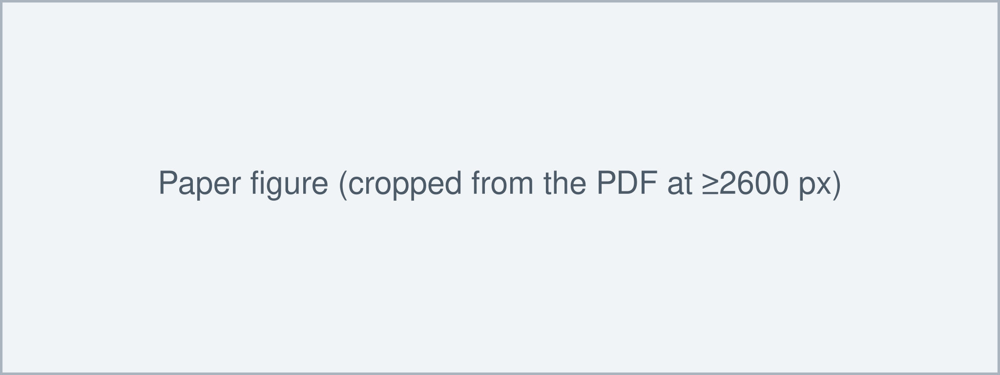

A hundred learned questions, asked of a frozen encoder, find every object in one pass
Earlier pipelines first propose many candidate boxes, score them, and then remove duplicates with hand-tuned rules. MethodName skips all of that. It keeps a strong pretrained image encoder frozen and trains a small decoder in which a fixed set of learned queries each look for at most one object.
Figure 1 · the idea, one frame at a time
1Frames arrive one at a time
Any RGB video, frame by frame, or a single image. Nothing else is needed.
2A frozen encoder makes features
A pretrained vision transformer turns the frame into feature tokens. It is never retrained.
3Learned queries ask what is there
Each of 100 learned query tokens attends to the features and claims at most one object; spare queries answer “no object”.
4The decoder answers per query
A trained decoder lets the queries read the features; a small head turns each decoded query into a class and a box.
5One box, class and 3D position per object
Every kept query gives a class, a 2D box and a 3D position. The optional refinement adds the camera path.
The design choice that matters is keeping the encoder frozen and making the decoder do the work. Each query is matched to at most one ground-truth object during training, so duplicates are penalised by the loss itself instead of being removed afterwards.
One frozen encoder, one fine-tuned neck, one trained query decoder
This is the model as the released code builds it (commit abc1234), not as the paper's Figure 2 draws it. Blocks and edges where the two disagree carry a ≠ badge; open them to see both versions.
Optional per-video refinement, in three stages
For a whole video the single-pass predictions can be refined offline. The objects, the cameras and one world scale become variables, and three stages release them one group at a time. Click a stage, or press Run stages.
What the figures leave out: a set loss, a two-phase recipe and two paper-vs-code differences
Losses
Training first matches predictions to ground-truth objects one to one, with the Hungarian algorithm, and only then computes the losses. A query left without a match is trained to answer “no object”, which is why no duplicate removal is needed at test time.
\mathcal{L} = \mathcal{L}_{match}\big(Q_L\big) + \sum_{l=1}^{L-1} \mathcal{L}_{aux}\big(Q_l\big),\qquad \lambda_{cls} = 2,\ \lambda_{box} = 5- Class: cross-entropy over C classes plus “no object” \varnothing, with the \varnothing weight lowered to 0.1.
- Box: L1 on normalised box coordinates \lVert b_i - \hat b_{\sigma(i)} \rVert_1, only for matched queries.
- 3D position: L1 on the object centre in the camera frame (weight 1.0), only for objects with 3D labels.
- Auxiliary: \mathcal{L}_{aux} repeats the same loss after every earlier decoder layer, through the shared head.
Training recipe
Two phases. First 50 epochs on the synthetic set with the encoder frozen and the neck, decoder, head and queries trained; then 10 epochs on the real set at a 10× lower learning rate. AdamW, learning rate 1e-4 (1e-5 for the neck), weight decay 1e-4, batch 32, gradient clipping at 0.1. Training time and hardware are not stated.
Where the paper and the released code differ
- Decoder depth is 8 layers in the released config, not 6. p.4 configs/default.yaml:31
- The matching cost includes a generalised-IoU term with weight 2, absent from Eq. 3. Eq.3 src/losses.py:47
Inference details that matter
- The score threshold replaces non-maximum suppression. A query is kept if its best class is not “no object” and its score is at least 0.5. Lowering it to 0.3 raises recall but adds duplicates (Fig. 5).
- Frames are independent in the single pass. Nothing is carried from one frame to the next, so objects are not tracked and may flicker. Only the refinement links the frames.
- The 3D position needs a focal length. The code assumes a 60° field of view when none is given; the paper does not say what was used for evaluation.
Inference, step by step (code order)
- Resize the frame to a long side of 518 px and normalise it.
- Frozen encoder → features at layers 6, 12, 18 and 24; neck → F': N×256.
- Decoder: 100 learned queries Q_0 attend to each other and to F', 8 layers in the released config.
- Head → class logits, 2D box and 3D position per query.
- Keep queries with a score of at least 0.5 that are not “no object”; no suppression step.
- Optional, per video: run the three-stage refinement of Section 2.
Best AP among single-pass methods, close to a baseline that is given the boxes
Training data: one synthetic set, one small real set, one inherited pretraining
Rendered indoor scenes. Labels used: class, 2D box and 3D centre of every object.
Real photos with 2D boxes and classes; the 3D position loss is off for this set.
All image understanding below the neck comes from this checkpoint.
What MethodName trains itself (parameter counts computed from the code; the paper gives none):
Headline numbers
Benchmark X: AP and AP50 (AP at IoU 0.5) in %, higher is better; Chamfer in cm, lower is better. Benchmark Y: precision, recall and F1, higher is better. Bold = best and underline = second, as marked in the paper.
| Benchmark X | Benchmark Y | ||||||
|---|---|---|---|---|---|---|---|
| Group | Method | AP ↑ | AP50 ↑ | Chamfer ↓ | Precision ↑ | Recall ↑ | F1 ↑ |
| two-stage | Baseline A | 38.2 | 57.9 | 4.81 | 0.71 | 0.52 | 0.60 |
| two-stage | Baseline B | 44.9 | 65.3 | 3.95 | 0.76 | 0.57 | 0.65 |
| two-stage | Baseline C | 41.7 | 61.0 | 4.12 | 0.69 | 0.58 | 0.63 |
| single-pass | Baseline D | 36.5 | 55.3 | 5.02 | 0.64 | 0.49 | 0.56 |
| single-pass | Baseline E | 40.3 | 60.2 | 4.40 | 0.70 | 0.55 | 0.62 |
| single-pass | MethodName | 45.6 | 64.8 | 3.71† | 0.74 | 0.62 | 0.67 |
marks a row whose comparison has a caveat; hover or tap it for the reason. Click a numeric header to sort; a third click restores the paper's order. † with the per-video refinement; the single pass gives 3.98 (Tab. 3).
Benchmark X, single pass (no refinement). AP in %, higher is better; Chamfer in cm, lower is better; FPS higher is better. Each row changes one thing from the full model.
| Variant (Tab. 3) | AP ↑ | Chamfer ↓ | FPS ↑ |
|---|---|---|---|
| Full model | 45.6 | 3.98 | 12 |
| Freeze the neck | 41.9 | 4.37 | 12 |
| No auxiliary loss | 43.8 | 4.05 | 12 |
| 50 queries | 44.7 | 4.02 | 13 |
| 3 decoder layers | 42.6 | 4.21 | 16 |
| Fine-tune the encoder | 39.8 | 4.66 | 12 |
Fine-tuning the encoder on the small training sets hurts most (AP 45.6 → 39.8). The paper reports one run per row.
What each method needs at test time and what it was trained on, as stated in Tab. 2 of the paper.
| Method | Needs at test time | Trained on | Note |
|---|---|---|---|
| Baseline A | image, region proposals | real set B | Two stages: proposals, then one classifier per region. |
| Baseline B | image, ground-truth 2D boxes | real set B | Only classifies and lifts the given boxes, so it never misses an object; its recall is an upper bound, not a comparable number. |
| Baseline C | image, region proposals | synthetic set A, real set B | Same training data as MethodName. |
| Baseline D | image | real set B | Dense anchors with non-maximum suppression. |
| Baseline E | image | synthetic set A, real set B | Single pass; fine-tunes its whole encoder. |
| MethodName | image (video for the refinement) | synthetic set A, real set B | Frozen encoder. The Chamfer value in Tab. 1 uses the per-video refinement; every other number is single pass. |
What each component buys
Results in the paper's own figures


The frozen encoder and the fine-tuned neck carry the method; the extra losses add little
Read against its own ablations, MethodName's accuracy comes mostly from not disturbing a strong pretrained encoder and from adapting its features with a fine-tuned neck. The learned queries make the single pass possible, but no ablation replaces them with anchors, so their own contribution to accuracy is not measured.
What carries the method
- mainKeeping the encoder frozen. Fine-tuning it on the small training sets drops AP from 45.6 to 39.8 and worsens Chamfer from 3.98 to 4.66 cm. Tab.3
- mainA fine-tuned neck and a deep enough decoder. Freezing the neck costs 3.7 AP; 3 decoder layers instead of 6 cost 3.0 AP. Tab.3
Minor additions
- minorAuxiliary loss: 43.8 → 45.6 AP. Tab.3
- minor100 queries instead of 50: +0.9 AP at one FPS less. Tab.3
- untestedPer-video refinement: improves Chamfer (3.98 → 3.71 cm); its stages and energy terms are not ablated. Tab.1
Limitations the authors state
- Heavily occluded objects are often missed. p.8 Fig.6
- A closed set of 10 classes; new classes need retraining. p.8
- The refinement assumes a static scene with a ground plane. p.9
What the paper does not show
- The closest baseline is given the answer. Baseline B uses ground-truth 2D boxes at test time, yet the paper ranks it in the same table without a note; MethodName beats it on AP by only 0.7. Tab.1 Tab.2
- The 3D comparison mixes settings. The best Chamfer in Tab. 1 uses the per-video refinement; every baseline is single pass. The single-pass value (3.98) is only in the ablation table. Tab.1 Tab.3
- One run per number. No seeds or variance are reported, so the gaps under 1 AP in the ablations may be noise. speculation Tab.3
- The released model may differ from the evaluated one. The released config has 8 decoder layers, the paper 6, and the matching cost has an extra term. p.4 configs/default.yaml:31
Open questions
- How much of the gain comes from the learned queries themselves? An anchor-based decoder on the same frozen encoder and neck would answer it.
- Does the frozen encoder still win when the training set is ten times larger?
- Can the refinement's camera and scale terms be predicted in the single pass instead of optimized?